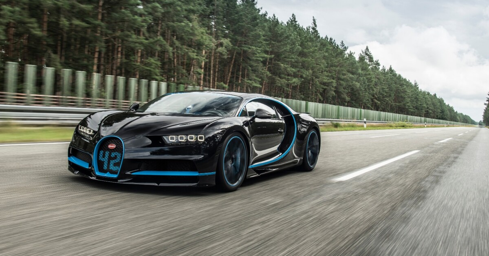
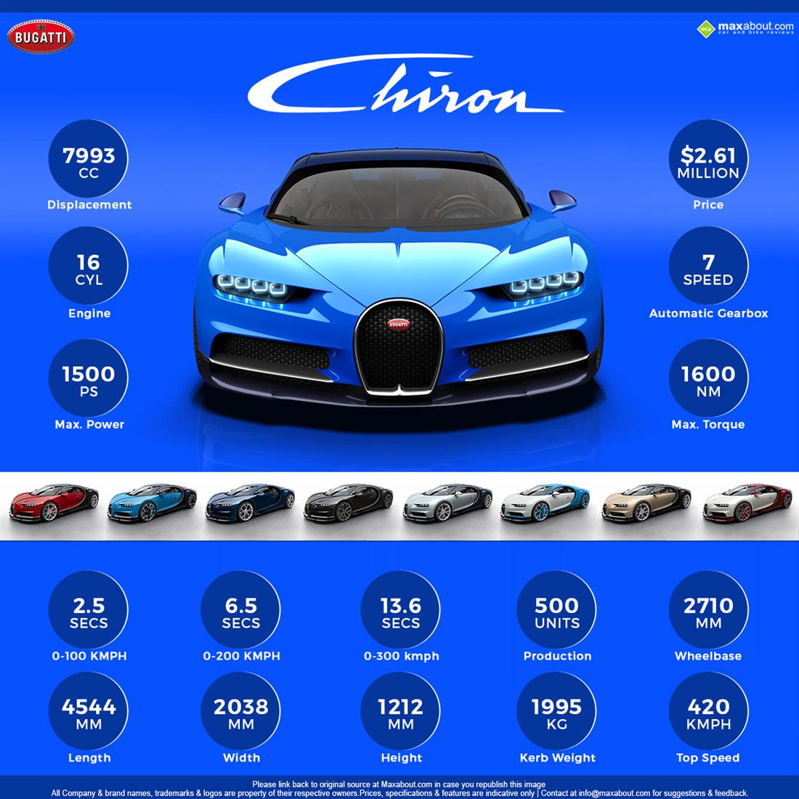

Welcome to Buggati Car Website
Here, we have Buggati Chiron Car, a supercar from the German manufacturer Buggati.
Buggati Chiron Car


The Buggati Chiron ia a hypercar developed by Buggati.It was Officially revealed at the 2016 Geneva Motar Show and is Buggati's successor to Veyron.
Some of the features of the Buggati Chiron include:
- Powered by a 16-cylinder W16 engine producing 1,500 horsepower
- Top speed of over 420 Km/h (261mph)
- Acceleration from 0 to 100 km/h (0 to 62 mph) in less than 2.5 seconds
- An all-electric launch system with a launch speed of up to 124 Km/h (77mph)
-
Video of Buggati Chiron Car